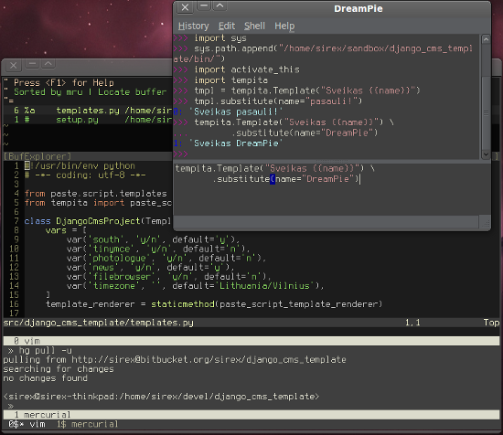

Priemonės darbui su Python ir Django
Iš anksto įspėju, kad čia aprašytos priemonės toli gražu nėra skirtos pradedantiesiems programuotojams.
Naujame darbe pradėjęs programuoti Python skyriau šiek tiek laiko darbo priemonių paruošimui ir nusprendžiau pasidalint savo naudojamo arsenalo sąrašu su visais. Jei trumpai, pagrindinės darbo priemonės kurias naudoju yra šios: Xterm, screen, zsh, vim, ctags, mercurial, DreamPie, virtualenv, buildout, Sphinx, pylint, django-debug-toolbar, South, ipdb.
Štai kaip viskas atrodo bendroje visumoje:
{kind=link}
Visų šių programų konfigūraciniai failai guli viešai prieinamoje vietoje:
http://bitbucket.org/sirex/home/src/
XTerm yra paprastas, gan greitas (kur kas greitesnis už gnome-terminal ir šiek tiek lėtesnis už rxvt) ir labai lankstus terminalo emuliatorius.
screen yra virtualus terminalų multiplexeris, suteikiantis viename terminalo lange naudoti kelias terminalo sesijas. Be šios savybės screen turi dar daug visokių įdomių funkcijų, tokių kaip virtualūs terminalų langai ir jų dalinimas, kopijavimas iš terminalo išvesties, terminalo išvesties saugojimas, virtualių terminalų sesijos atskyrimas ir t.t. Išmokus juo naudotis, praktikoje tikrai praverčia.
zsh – tiesiog gera komandinės eilutės sąsaja (shell). Naudoju jį todėl, kad jis tiesiog yra tobulas ir turi viską, ko gali prireikti. Plačiau: http://grml.org/zsh/zsh-lovers.html
Ko gero daugiausia zsh man patinka todėl, kad paspaudus TAB, praktiškai visada gausi tai ko reikia… Taip, zsh taip pat supranta ir djanogo-admin.py sub-komandas.
vim
Tikriausiai visi ir taip žino, kas yra Vim. Jei nežinot, tai Vim yra vadinamas „programmers editor“ (programuotojų teksto redaktorius). Vim yra vienas populiariausių programuotojų tekstų redaktorius visame pasaulyje.
Naudoju šiuos Vim įskiepius: BuffExplorer, LargeFile, snipMate, surround, ZenCoding, PyFlakes, delimitMate. Visą kitą Vim’as turi pagal nutylėjimą, sintaksės spalvinimas, galimybė atitraukti Python blokus nuo krašto, omnicompletion funkcija ir pan. Naudojant ctags galima šokinėti per visas Python funkcijas ir klases esančias bet kuriame projekto faile. snipMate turi ne tik python iškarpas, bet ir django.
snipMate
ctags
Pagrindinė šio įrankio paskirtis – surinkti informaciją apie visus kode naudojamus objektus, surašyti vietas, kur jie yra aprašyti ir viską suindeksuoti, kad būtų galima vykdyti greitą paiešką. Surenkami objektai yra klasės, funkcijos, konstantos, kintamieji ir t.t. ctags veikia neįtikėtinai greitai, per kelias sekundes suindeksuoja didžiules kodo bibliotekas.
Vim supranta ctags ir gali naudoti suindeksuotą informaciją, todėl programuojant, labai lengva šokinėti nuo vienos funkcijos, prie kitos, skirtinguose failuose ar net paketuose.
ctags puikiai integruojasi su buildout, naudojant z3c.recipe.tag receptą, kurio dėka galima suindeksuoti ne tik savo projektą, bet ir visus kitus priklausomus paketus, kuriuos naudoja projektas!
mercurial
Decentralizuota versijų kontrolės sistema. Praktiškai, prieš pradėdamas kažką programuoti, instinktyviai suvedu šią komandą:
hg init
Tada tiesiog rašau kodą, dažnai komitinu ir esu ramus, nebaisu, kad mano parašytas kodas kažkur pradings. Kažkiek vertą dėmesio kodą, mercurial pagalba, tiesiai iš komandinės eilutės siunčiu į bitbucket.org.
Mercurial patogus tuo, kad yra puikiai suderinamas su kitomis išorinėmis priemonėmis. Todėl be problemų galiu dirbti su git ropozitoriumais, naudodamas hg-git įskiepį, čia daugiausiai tais atvejais, kai reikia forkinti kažką iš github.com. Be šito, naudoju mercurial su meld ir kdiff programomis, pakeitimams peržiūrėti.
DreamPie
DreamPie yra patogi priemonė, kai reikia testuoti atskiras kodo vietas. Panašią funkciją atlieka ipython, kurį taip pat dažnai naudoju ir sakyčiau ipython daugeliu atveju net gi yra pranašesnis už DreamPie, išskyrus vieną – zsh sunku naudoti, kai reikia testuoti kelių eilučių kodą. DreamPie puikiai veikia ir tais atvejais, kai reikia testuoti kelias eilutes, ciklus ir pan.
virtualenv, buildout
Abi šios priemonės yra nepakeičiamos programuojant Python. Tiek virtualenv, tiek buildout atlieka panašią funkciją – sukuria izoliuotą aplinką, kurioje nepriklausomai nuo sistemos galima įdiegti reikiamas Python paketų versija ir programuojant naudoti būtent tos izoliuotos aplinkos paketus.
virtualenv daugiau skirtas testinės aplinkos kūrimui, kurioje galima įdiegti norimą ištestuoti savo paketą, o kartu į tą pačią izoliuotą aplinką galima įdiegti ir visus susijusius paketus.
buildout yra kur kas sudėtingesnis dalykas ir daugiau skirtas būtent programavimo ir deployinimo reikmėms. Buildout gėris yra tame, kad jis turi visą galybę taip vadinamų receptų, kurių pagalba galima susikurti labai patogią programavimo aplinką. Programuojant Django naudoju djangorecipe,kurio pagalba gaunu veikiantį django projekto katalogą ir visą rinkinį galimybių tą projektą valdyti. Verta paminėti vieną iš tokių galimybių – wsgi vykdomojo skripto generavimas, kuri panaudojus labai paprasta projektą paleisti bet kokiame serveryje.
Gan dažnai pasitaiko, kad dirbant, net ir tam pačiam projektui sukuriamos kelios buildout aplinkos. Kad kiekvienai iš tų aplinkų nereikėtų vėl pakartotinai siųstis visų paketų ir diegti visų paketų, kas kartais užtrunka gan ilgai, buildout suteikia galimybę savo namų kataloge nurodyti kur saugoti bendrai naudojamus paketus. Tai reiškia, kad visi paketai ir visos skirtingos jų versijos suvažiuoja į vieną bendrą katalogą ir visos buildout aplinkos bendrai naudoja tuos paketus.
omelette yra buildout receptas, kuris tvarkingai išdėlioja visus projekte naudojamus išorinius paketus viename kataloge. Tai yra tikras išsigelbėjimas, nes kaip žinia kiekvienas python paketas įdiegiamas atskiruose kataloguose, o tie atskiri katalogai gali būti bet kuriame sys.path sąrašo kataloge.
Sphinx
Apie Sphinx žmonės kalba taip: „A great tool that actually makes programmers want to write documentation!“. Programuojant būtina rašyti dokumentaciją, kad net ir pats grįžęs prie to pačio kodo po metų, žinotum kas ten padaryta. Sphinx yra labai patogi dokumentacijos ruošimo priemonė, kurioje iš esmės rašomas išplėstas reStructuredText tekstas. Pasinaudojus išplėtimais į dokumentacijos tekstą galima įtraukti ištisą modulio dokumentaciją specialių raktinių žodžių pagalba. Į nurodytas dokumentacijos vietas, iš pačio kodo docstringų senrenkama informacija ir suformuojama graži API dokumentacija. Sphinx puikiai integruojasi į buildout aplinką, dėl ko rašyti dokumentacijas dar paprasčiau.
pylint
Tai yra pyChecker arba PyFlakes analogas išsiskiriantis tuo, kad turi daugiausiai funkcijų ir lyginant su pyChecker veikia kur kas stabiliau. pylint paskirtis – kodo tikrinimas, surenkant visas programavimo klaidas, vietas kuriose nesilaikoma apibrėžto kodo standarto, vietas, kurios panašios į blogo programavimo praktiką ir pan. pylint prasineša pro visą kodą, kurį nurodai ir sugeneruoja didžiulę ataskaitą (dydis priklauso nuo klaidų gausos… :) ). Ataskaitoje suskaičiuojamas kodo kokybės įvertinimas 10 balų sistemoje ir pateikiama išsami statistika apie klaidas, jų pasiskirstymą, dažnumą ir pan. Manau tai yra must-have įrankis programuojant Python.
django-debug-toolbar
Programuojant su Django tai yra must-have įrankis, kuris rodo visą informaciją apie užklausą: užklausos trukmė, užklausų sąrašas ir kiekvienos užklausos trukmė, užkrauti šablonai ir juose naudoti kontekstiniai kintamieji, užklausai perduoti kintamieji ir t.t. ir t.t. django-debug-toolbar integruojasi į svetainę ir atvaizduojamas pasislepiančios žymės pavidalu, kurią paspaudus bet kuriame labe išsiskleidžia visas gėris, kuris taip pat geba sustabdyti užklausą, jei jos pabaigoje vyksta redirect’as.
South
South yra vienas iš perspektyviausių Django duomenų bazių migracijos sprendimų ir ko gero greitu laiku bus įtrauktas į Django branduolį. South geba išsaugoti duomenų bazės būseną failų pavidalu, kuriuos galima įtraukti į versijų kontrolės sistemą ir turėti galimybę sklandžiai migruoti duomenų bazę, keičiantis jos struktūrai.
ipdb
BDD (Bug Driven Development) praktikoje kartais prireikia ir debugerio. Tam reikalui python turi vidinį debugerį pdb, bet aš naudoju šiek tiek pagerintą variantą: ipdb. ipdb yra tas pats pdb tik išplėstas ipython funkcijomis. Naudojant šį debugerį galima naudoti visas standartinio debugerio funkcijas ir daugiau.
Reziumė
Didžiąją dalį čia aprašytų dalykų reziumuoja vienas paprastas, nedidelis buildout konfigūracinis failas:
[buildout] parts = django ctags omelette sphinx pylint eggs = ipdb ipython South django-debug-toolbar [django] recipe = djangorecipe version = 1.2 project = myproject settings = development eggs = ${buildout:eggs} [ctags] recipe = z3c.recipe.tag:tags eggs = ${buildout:eggs} [omelette] recipe = collective.recipe.omelette eggs = ${buildout:eggs} [sphinx] recipe = zc.recipe.egg eggs = ${buildout:eggs} Sphinx scripts = sphinx-build sphinx-quickstart extra-paths = ${django:location} ${buildout:directory} [pylint] recipe = zc.recipe.egg eggs = ${buildout:eggs} pylint extra-paths = ${django:location} ${buildout:directory} entry-points = pylint=pylint.lint:Run arguments = sys.argv[1:]